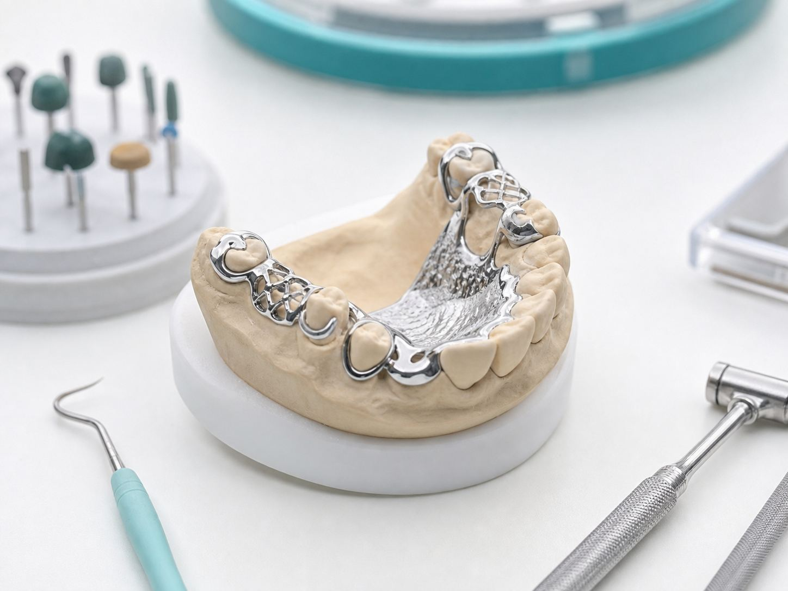
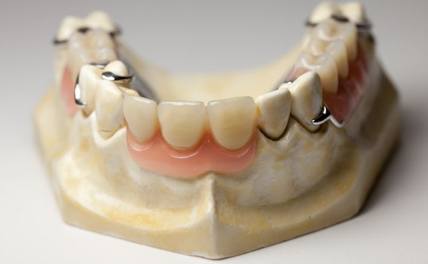
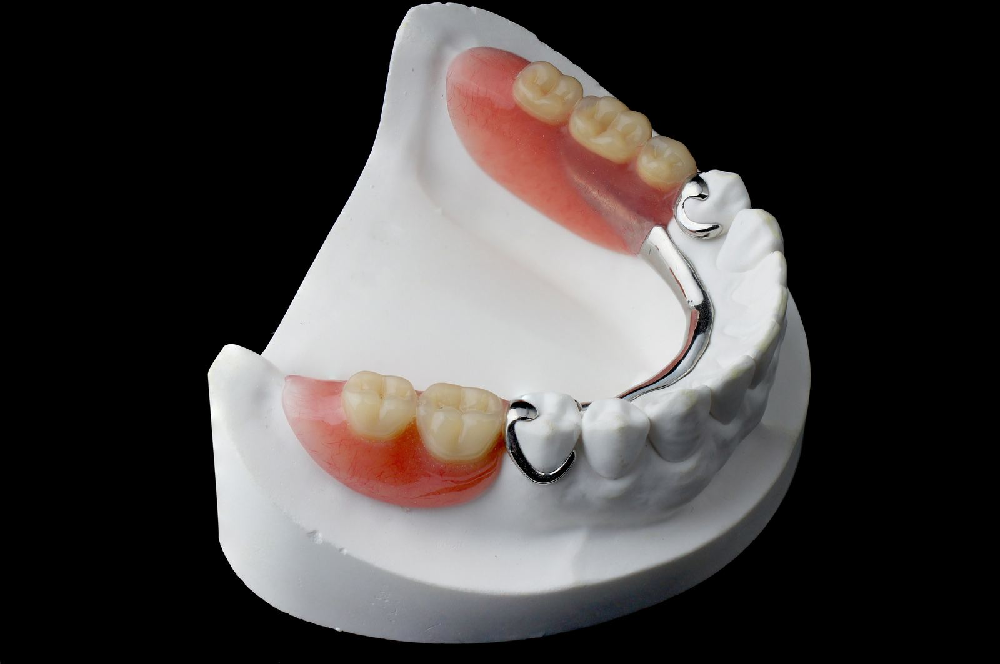
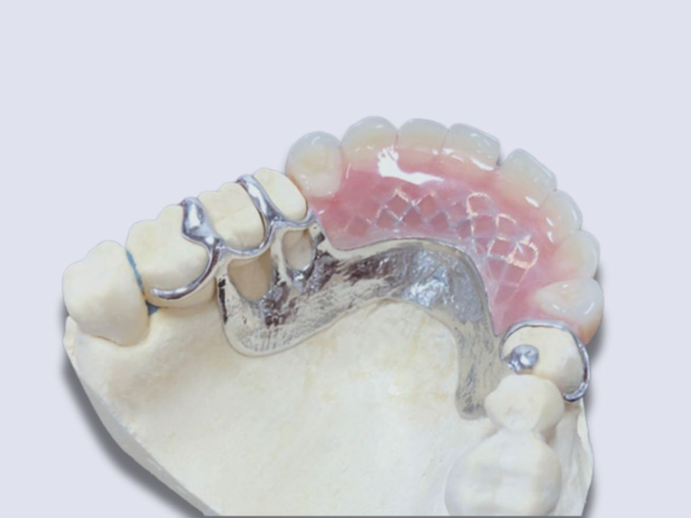
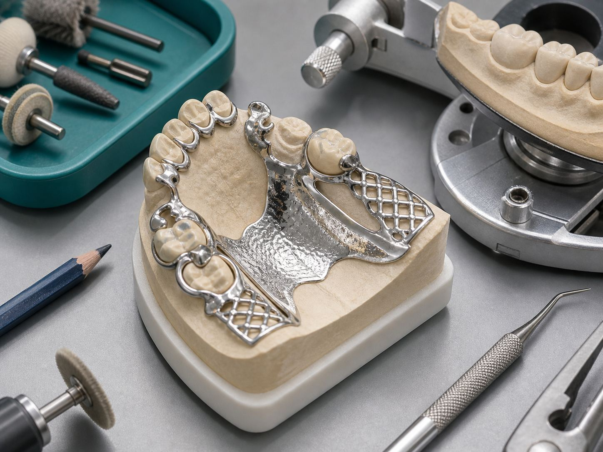
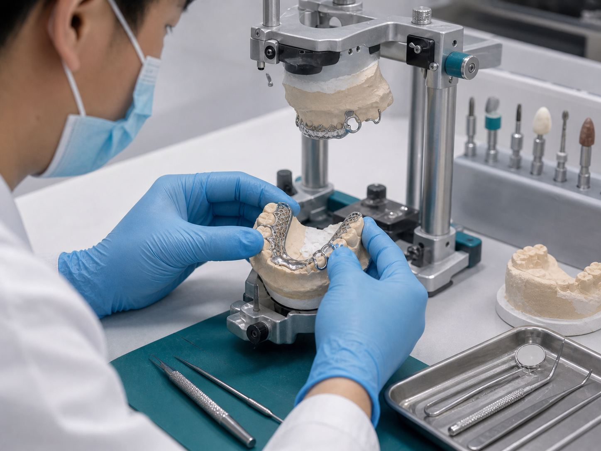

Removable Prosthetics
Cast Partial Frameworks
Cast partial frameworks are produced for retention, support and patient comfort. Design review focuses on clasp placement, connector strength, tissue adaptation and a clean finish for removable partial denture cases.






Product Details
- ApplicationsRemovable partial denture frameworks for bounded and free-end saddle cases.
- DesignMajor connectors, clasps, rests, mesh retention and tissue-facing adaptation.
- ChecksFramework seating, clasp retention, polish quality and model adaptation.
- Case FilesMaster model, bite registration, design instruction and tooth shade if required.
Inquiry Form
Request framework quotation support.
Send model information, design instruction, tooth shade and delivery requirements.